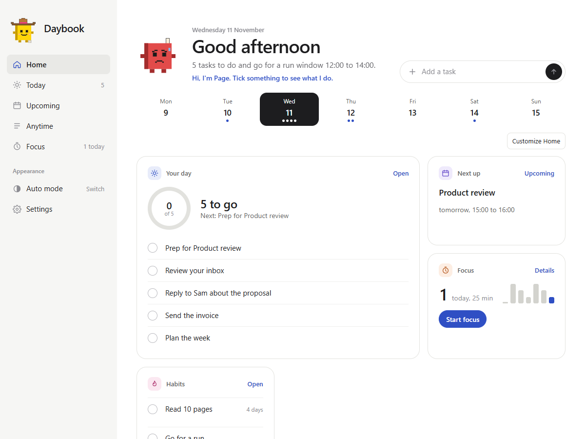
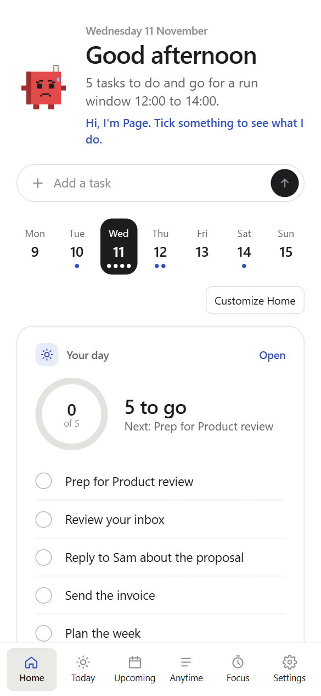

Notion
Sign in with Notion, pick a database, match its columns, and see your tasks next to your calendar. Tick them off in Daybook and Notion updates.
Free. No account. Works in your browser.
Your tasks, notes, calendar, habits and a Pomodoro timer in one place. Daybook pulls from Notion, your calendar, Obsidian and more, lets you arrange it your way, and keeps it all on your device.
Opens with a sample day, so you can look around before you connect anything.
Tick something and watch Page.
14:00
Design review
Reply to Sam
Ask Sam for the Q3 numbers before Friday.
This is a toy copy. The real thing reads your own tasks.
A sample day in Daybook on a laptop and on a phone. When you connect your own tools, your own data replaces the sample.


Daybook does not replace your tools. It reads from them and shows the day in one place. Notion is one source among several.
Sign in with Notion, pick a database, match its columns, and see your tasks next to your calendar. Tick them off in Daybook and Notion updates.
Add a calendar file or link from Google, Outlook or Apple. Recurring events and time zones work. Sign-in for Google and Outlook is coming.
Bring in your notes and the tasks inside them, and tick tasks off right in the note. Only if you choose to connect a vault.
Your own habits and streaks sit right on the day, with optional reminders. Nothing to connect.
Pick a task and start a focus session with timed breaks. Page puts on headphones while you work and counts your finished pomodoros.
Start from a layout, then change anything. Reorder, rename or hide any tile. Add your own counters and habits. Pick an accent colour, and light or dark.
Your Notion tasks, with today front and centre.
Your events, your tasks and a focus timer.
Notion and Obsidian together, for tasks and notes.
Only your day and what is next. Nothing else.
A small companion who notices your day. Page changes colour and outfit as the day goes, and cheers when you finish things. Never nags, and you can hide Page in Settings.
Your tasks, habits and settings are stored in your browser. There is no server holding them.
Open it and use it. There is nothing to sign up for and no tracking.
Daybook is open source under the MIT licence. You can read every line.
Two honest notes. Notion does not let web pages talk to it directly, so Notion tasks pass through a small helper (a free Cloudflare Worker) that signs you in and forwards your requests. It stores and logs nothing, and you can run your own copy. Without Notion, nothing leaves your browser. And because your data lives in one browser, there is no sync between devices yet. You can export a backup and import it elsewhere. The privacy page has the details.
It then opens in its own window with its own icon, and it works offline.